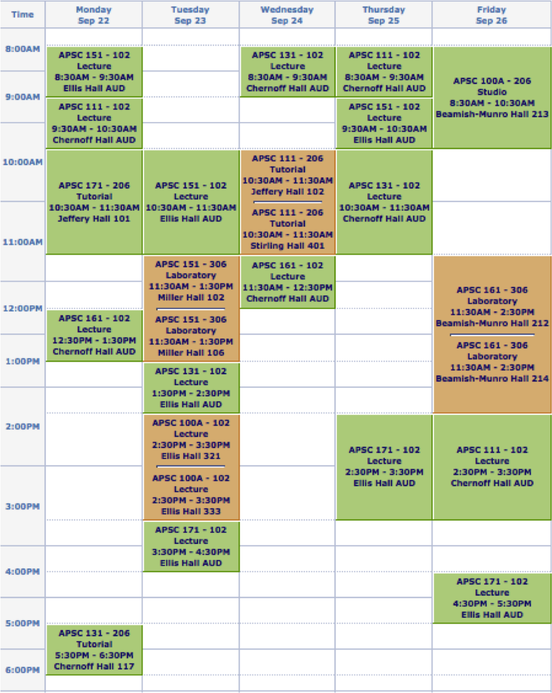
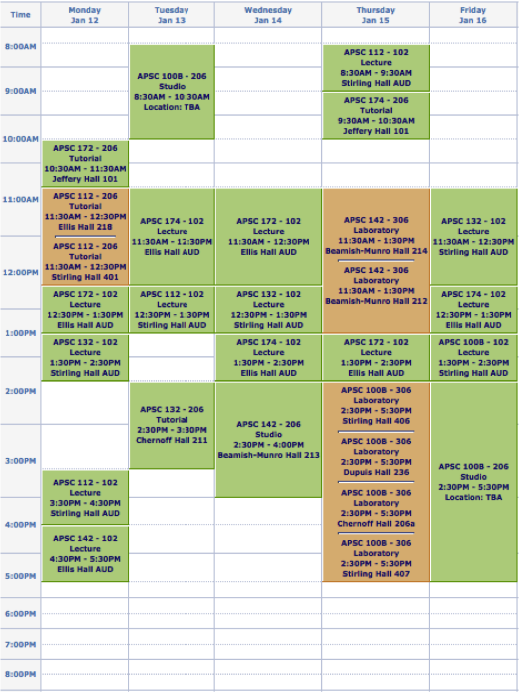

Credits for the following grade 12 courses are required:
| Required grade 12 credits | English 4U |
|---|---|
| Calculus and Vectors 4U | |
| Chemistry 4U | |
| Physics 4U | |
| One of the following | Advanced Functions 4U, Biology 4U, Data Management 4U, Computer Science 4U, Earth and Space Science 4U |
Your final grade in English 4U must be a minimum of 70%. Only these five submitted grades will be considered as your grade average.
Go to topYes, so long as the course is taken at an accredited source.
Go to topYou will need to apply to Queen's through the Ontario Universities' Application Centre (OUAC). You will then receive an application confirmation, providing you with a Queen's NetID to sign onto SOLUS Student Center.
Solus will provide a list of all necessary documents, and your application status. Key dates, such as the final day to submit personal statements, are linked below.
While the minimum average to be considered is 75%, the majority of grades for accepted students was 84% and above for 2014.
Go to topYes, however this depends on the course and the grade achieved. For example, AP Calculus AB offers no equivalent, however AP Calculus BC with a score of 5 acts as a credit for APSC 171.
Information for IB courses can be found at:
IB Course InformationInformation for IB courses can be found at:
In 2014, there were 16,339 undergrad students, and 4,318 grad students.
Go to topYes, it is for first year. For later years you must apply with no guarantee. However, you are still able to buy a meal plan to access the cafeterias on campus.
Go to topRooms are assigned based on a lottery system. Students will rank the type of room they would like, such as single, double, or economic double.
Go to topYes. Quiet Hours occur between the hours of 11pm to 8am, Sunday to Thursday, and from 1 am to 8 am on Friday and Saturday. Some floors have altered Quiet Hours. Students are required to respect the Quiet Hours in place for these communities. In addition, quiet Hours are increased during exam periods. Students will be notified when Quiet Hours are increased.
Go to topPart of your fee is for Resnet, which can be opted out. It pays for one Ethernet connection, which you can either directly plug into your laptop, or to a wireless router.
There is also campus wide internet in all buildings
Go to topCurrently, there are two types of meal plans. The first is 18 meals a week, resetting monday at 12:00 am. The second plan offers a set number of meals for the entire year.
More information can be found at Queen's dining page
Queen's offers a number of services to aide students living with special dietary requirements. Vegetarian, Vegan, Gluten-Free, and Halal meals are all accomodated for, as well as specific allergies.
There are two cafeterias on main campus: Lenny and Ban Righ. In addition, there is a cafeteria over at West campus called Jean Royce. Meal equivalencies allow students to use one meal for $8.75 worth of food at various realtors on campus, such as Tim Hortons, Pita Pit, Booster Juice, and the Lazy Scholar.
In addition to student government opportunities through EngSoc and 15 design teams, Queen's offers around 450 student clubs, and students are encouraged to create their own. The following link lists every club registered by the Alma Mater Society
In 2014, Queen's engineering had a retention rate of 96% first years, with the rest either switching majors or deciding that Queen's wasn't right for them.
Go to topQueen's has a 72:28 ratio, the highest for engineering amongst any school in Ontario.
Go to topThe max size of a lecture is 250, and a max size of 58 for tutorials. Class sizes drop in second year as students decide on their engineering program, or if the student decides to enroll in Section 900 after winter exams.
Go to topFall Semester, running until Christmas
Winter Semester, running until exams in April
Provided you have passed all courses, you will choose your program late February, after reading week. Each program will host an orientation night early January/late February, with speakers, tours, and upper years available to answer questions. Information on the 10 programs offered at Queen's can be found at:
So long as you pass all first year courses, you will be guaranteed a spot in the option that you choose. The final day to choose is sometime late February.
Go to topTo graduate, a student must pass all core courses (50%), and end with a cumulative GPA of 1.6 (~60%). In addition, some courses may have the requirement that the student must pass the final exam to pass the course, or that their average will more heavily weigh the exam in the event that they do not pass it with over a 50%.
Go to topThere are a plethora of services available to first year engineers, where they can get help from upper year students, or retake failed fall semester courses.
Douglas tutorials offer help sessions led by upper years, with the schedule being emailed to all first years.
EngBounceBack offers upper year facilitators to individually aide developing sustainable learning strategies.
Englinks is a part of the engineering society, and holds exam and midterm prep sessions.
An engineering embedded counselor in the ILC is available to discuss stresses students face and suggests coping mechanisms.
J-Section allows first years to repeat fall semester courses, or to retake them to increase their GPA. They enjoy the benefit of working in smaller class sizes more similar to high school, and end classes halfway through summer. This allows them to get back on track before entering second year. More information about J-Section can be found through the link below: